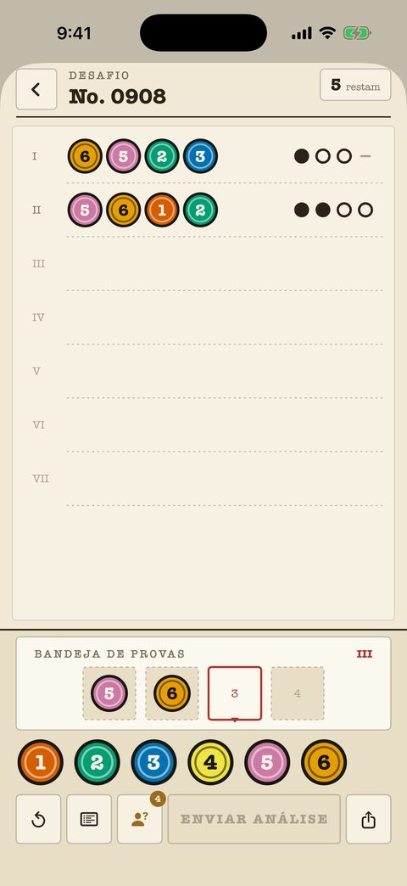

Casos clássicos
240 casos do iniciante ao mestre, cada um uma folha numerada do dossiê. O contador de tentativas fica no canto superior direito; as marcas são tinta pura — ponto, anel, traço — e nunca dependem de cor.
- Toda análise anterior fica na folha para cruzar informações.
- As notas no tabuleiro marcam cores eliminadas e confirmadas.
- O ajuste "Marcas de forma" dá a cada cor a sua própria silhueta.
- Os primeiros 40 casos são grátis.